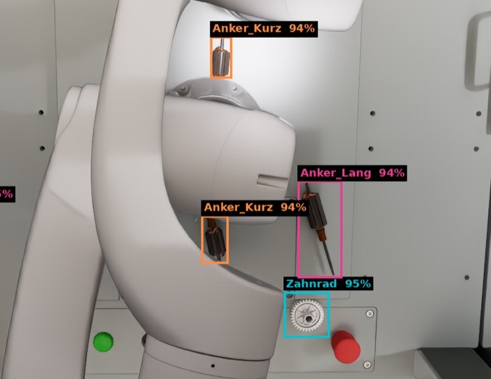
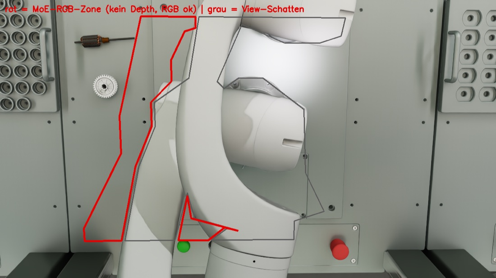
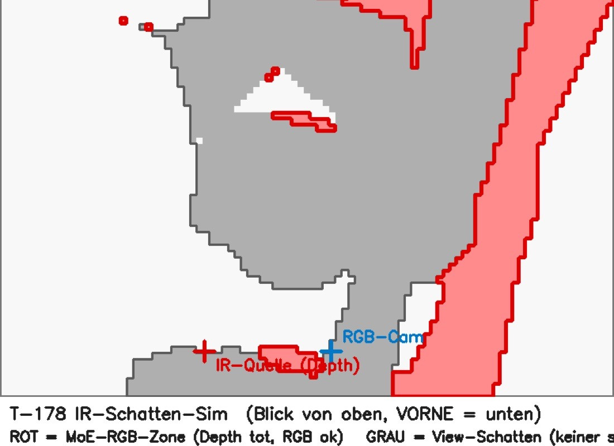

Ausgangssituation und Aufgabenstellung
Marc
◉
Zivid L110+
blickt von oben auf den Montagetisch und liefert
Farbbild und Tiefenbild in einer Aufnahme.
⤢
Neura Lara5
führt mit einem Schunk-Greifer die Fügeoperation
aus, sobald er weiß, wo er zufassen soll.
▣
CAD aller Bauteile
liegt vollständig vor, jede Geometrie ist also
exakt bekannt.
⚠
Was bisher fehlte
eine automatisierte Pipeline, die dem Roboter
sagt, wo die Teile im Raum liegen, damit er sie greifen kann.
Aufgabenstellung: Gesucht ist für jedes Teil die vollständige Lage im Raum: drei Koordinaten für die Position und drei Winkel für die Drehung, zusammen die sechsdimensionale Lage, kurz 6DoF.
- Die Schätzung muss auf wenige Millimeter und wenige Grad genau sein, sonst verfehlt der Greifer das Teil oder fährt gegen die Zelle.
- Das befähigt den Roboter, die Fügeoperation selbstständig auszuführen, statt sie als Handarbeit zurückzulassen.
Warum das schwierig ist
Marc
◆
Komplexe Domäne
Blankes Metall trägt kaum invariante Bildmerkmale,
Drehsymmetrien erzeugen mehrdeutige Lagen, und der Arm verursacht Verdeckung
im Farb- wie im Tiefenbild.
◎
Erkennen genügt nicht
Detektion und Segmentierung liefern Klasse und
Bildregion. Die 6D-Lage folgt daraus nicht, sie erfordert eine Korrespondenz
zwischen Bildpunkten und CAD-Geometrie.
⚖
Millimeter und Grad
Gefordert ist Greifgenauigkeit im
Millimeterbereich. Sie muss auf der Domäne erreicht werden, die am wenigsten
verwertbare Merkmale liefert.
↻
Determinismus reicht nicht
Ein deterministisch programmierter Ablauf mit
Vorrichtungen und festen Greifpunkten löst genau eine Anordnung. Die Zelle
muss die Lage zur Laufzeit aus einer Aufnahme inferieren.
- Wegkonstruieren lässt sich nichts davon, denn Bauteile, Greifer und Zelle stehen so in der Lernfabrik.
- Gesucht sind deshalb Verfahren, die den Bezug zum CAD-Modell herstellen, und ein Maßstab, der sie fair gegeneinander stellt.

Unser Vorgehen
Marc- PrimärquellenBOP-Bestenlisten, Veröffentlichungen
- Ansätze auswählenoffen und reproduzierbar
- ImplementierenRGB- und RGB-D-Variante
- Modelltrainingsynthetische Daten
- Vergleichgemeinsamer Maßstab
- Verfolgt werden zwei Wege parallel: einer allein auf dem Farbbild, einer zusätzlich mit dem Tiefenkanal. Beide werden getrennt aufgebaut und erst am Ende gegeneinander gemessen.
- Als Kandidaten kamen die Verfahren der BOP-Bestenlisten infrage, weil dort der Stand der Forschung unter einheitlichen Bedingungen gemessen wird.
- Jeder im Team hat eigene Modelle trainiert und getestet. Verglichen wurde erst danach, die stärkste Variante ist in die gemeinsame Lösung eingegangen.
Der Lösungsansatz
Marc- DatensimulationIsaac Sim, BOP-Format
- Modelle bereitstellen
- zwei Wegegetrennt optimiert
- BewertungBOP, gleiche Szenen
- LösungExpertenauswahl
Farbweg RGB
- Nutzt allein das Farbbild und lässt die Tiefe bewusst ungenutzt.
- Braucht für jede Bauteilklasse ein eigenes, trainiertes Modell.
- Stützt sich auf die bekannte Tischebene als geometrische Zusatzbedingung.
- Arbeitet überall, auch im Infrarot-Schatten des Arms.
gegen
Tiefenweg RGB-D
- Nutzt Farbbild und Tiefenkanal gemeinsam.
- Kommt ohne bauteilspezifisches Training aus, ein CAD-Modell genügt.
- Erhält die metrische Größe direkt aus der Tiefe, statt sie zu erschließen.
- Setzt voraus, dass an dieser Stelle verlässliche Tiefenwerte vorliegen.
- Beide Wege wurden getrennt bis an ihre Grenze optimiert und erst danach verglichen. Das trennt die Leistung des einzelnen Verfahrens von der Wirkung der Kombination.
- Der Vergleich läuft auf denselben Testszenen, mit derselben Kennzahl und demselben Protokoll.
Betrachtete Verfahren
MarcAufgenommen wurde nur, was eine offene Implementierung und verfügbare Modelle mitbringt. Die Auswahl folgt den zwei Stufen der Pipeline.
Objekterkennung
YOLOv8-OBB
orientierte Boxen
RGBtrainiert
YOLO-Seg
pixelgenaue Instanzmasken
RGBtrainiert
SAM 3
promptbare Segmentierung, trennt die zwei
Ankerklassen nicht zuverlässig
RGBtrainingsfrei
CNOS
verworfen
geprüft
Lageschätzung
GDRNPP
direkte Regression aus dem Farbbild
RGBje Bauteil
FoundationPose
Rendern und Vergleichen
RGB-Dtrainingsfrei
GigaPose
vorlagen- und korrespondenzbasiert
RGB-Dtrainingsfrei
MegaPose
Verfeinerung, verworfen
geprüft
weiterverfolgt · Farbbild · Farbbild mit Tiefe
Woher die Daten kommen
Marc- CAD-Modell je Bauteil
- Isaac Sim Zelle, Kamera von oben Licht, Material, Anordnung zufällig variiert
- Konverter senkrechte Tiefe Maße und Symmetrien
- BOP-Datensatz Bild, Maske, Tiefe, Box Referenzlage je Teil
Variation und Augmentation
- Bereits in der Simulation wechseln Lichtquellen, Materialien und die Lage der Kamera von Szene zu Szene.
- Die Teile fallen zufällig auf die Arbeitsfläche, die Anordnung entsteht also physikalisch statt per Hand.
- In den Trainingspipelines folgt die photometrische Augmentation mit Unschärfe, Rauschen und Graustufenkonvertierung.
Symmetrien werden mitgegeben
- Anker und Ringmagnet sind durchgehend um ihre Längsachse drehbar, jede Drehung um diese Achse führt zum selben Bild.
- Das Zahnrad trägt eine siebenzählige Symmetrie, es gibt also sieben gleichwertige Drehlagen.
Womit gemessen wird
Marc
⚖
BOP-Standard
Der Average Recall mittelt über mehrere Fehlermaße und
gibt an, welcher Anteil der Schätzungen unter einer festgelegten Schwelle
bleibt.
ARIC-BIN-Protokoll
↻
Symmetriebewusst
Der Fehler wird über alle erlaubten Symmetrielagen
minimiert, damit eine korrekte Lage nicht als Fehler zählt, nur weil das Teil
gedreht erscheint.
MSSDMSPDVSD
▣
Daten aus der Simulation
Alle Szenen entstehen in Isaac Sim, die Referenzlage ist
dadurch exakt bekannt statt von Hand vermessen.
100 % synthetisch
11 mm
Schwelle des 3D-Maßes, ein Zehntel des
Objektdurchmessers
100
Testszenen je Klasse, für jede Kombination dieselben
IC-BIN
Protokoll für mehrere gleichartige Teile dicht
beieinander, wie im Griff in die Kiste
Farbweg: die Idee
MaximilianDie Tiefe bleibt bewusst ungenutzt. Was sie liefern würde, holt der Farbweg aus der Geometrie: die Teile liegen auf einer bekannten Ebene.
◉
Warum ohne Tiefe
Auf glänzendem Metall rauscht das Tiefenbild durch
Reflexionen, und im Infrarot-Schatten des Arms fehlt es vollständig.
▬
Was die Ebene gibt
Weil die Teile auf einer bekannten, ebenen Fläche
ruhen, sind Höhe und Kippung festgelegt und das Teil sitzt sauber auf.
▣
Sechs werden drei
Zu schätzen bleiben damit nur noch die Position in der
Ebene und die Drehung um die Hochachse.
- Der Farbweg arbeitet damit überall auf dem Tisch, auch dort, wo die Tiefenkamera nichts liefert.
- Dafür braucht er ein Modell je Bauteilklasse, was das kostet, zeigt das Ergebnis.
Farbweg: Umsetzung
Maximilian- Farbbildvon oben
- ErkennungYOLOv8-OBB
- Lage je TeilGDRNPP
- Weltlageauf Tischebene
- 3D-BetrachterCAD an der Lage
- Statt eines achsparallelen Rechtecks liefert der Detektor eine gedrehte Box. Bei schräg liegenden Teilen schmiegt sie sich an die Kontur an und der Bildausschnitt wird deutlich enger.
- Für jede Bauteilklasse schätzt ein eigenes, rein synthetisch trainiertes GDRNPP-Modell die Lage aus diesem Ausschnitt.
- GDRNPP sagt dabei für jeden Vordergrundpunkt seine Koordinate auf dem Objekt vorher und löst aus diesen Zuordnungen die Lage.
- Ein Adapter rechnet das Ergebnis in Weltkoordinaten mit dem Tischnullpunkt um und setzt das Teil sauber auf die Ebene auf.
Farbweg: Ergebnis
Maximilian
0,886
AR auf den Ankerklassen, 100 Szenen je Klasse
4 mm
mittlerer Lagefehler, Schwelle liegt bei 11 mm
7,2°
Drehfehler symmetriebereinigt, roh 83,3°
1,0 s
je Bild, Erkennung und Lage zusammen
Je Bauteil
| Klasse | AR | Bemerkung |
|---|---|---|
| Anker lang | 0,907 | längliche Form, OBB greift gut |
| Anker kurz | 0,870 | kompakter, weniger Kontur |
| Zahnrad | 0,838 | siebenzählige Symmetrie |
Was den Ausschlag gibt
- Den Ausschlag gibt das bauteilspezifische Training: Jede Klasse bringt ihr eigenes Modell mit und muss keine fremden Geometrien mit abdecken.
- Die Tischebene wirkt als harte Randbedingung, kein Teil schwebt und keines kippt in eine physikalisch unmögliche Lage.
- Der Preis bleibt: Jedes neue Bauteil braucht ein eigenes Training, bevor der Farbweg es schätzen kann.
Tiefenweg: die Idee
YannicDer zweite Weg nimmt den Kanal dazu, den der Farbweg bewusst liegen lässt: die gemessene Tiefe.
- Das Tiefenbild gibt für jeden Bildpunkt seinen Abstand zur Kamera an und liefert damit die metrische Größe der Szene unmittelbar.
- Genau diese Größe muss sich der Farbweg erst aus dem Erscheinungsbild erschließen, also aus Kontur, Schattierung und Verdeckung.
- Aus der Tiefe entsteht eine Punktwolke der sichtbaren Oberfläche. Die Lage lässt sich dagegen direkt ausrichten, statt sie aus der Projektion zu rekonstruieren.
- Der Vorsprung ist messbar: Auf den Bestenlisten des BOP-Vergleichs liegen die genauesten Verfahren durchgängig auf der Tiefenseite, reine Farbverfahren folgen mit rund 20 Prozentpunkten Abstand.
- Vorausgesetzt ist, dass an der betrachteten Stelle überhaupt verlässliche Tiefenwerte ankommen. Genau daran entscheidet sich der spätere Vergleich.
Tiefenweg: Umsetzung
Yannic- Farbbild und TiefenbildZivid, von oben
- ErkennungYOLOv8-OBB, wie im Farbweg
- Lage je TeilFoundationPose / GigaPose 3D
- Weltlageauf Tischebene
- 3D-Betrachter
FoundationPose
- Rendert aus dem CAD-Modell Lagehypothesen und vergleicht sie gegen das gemessene Tiefenbild.
- Verfeinert die beste Hypothese iterativ weiter, ein Bewertungsnetz entscheidet, welche gewinnt.
- Setzt eine externe Maske voraus, die hier aus der YOLO-Erkennung kommt.
- Braucht rund 8 Sekunden je Bild und steht unter einer nicht kommerziellen Lizenz.
GigaPose 3D
- Teilt die sechs Freiheitsgrade auf: Die Blickrichtung kommt aus dem Vergleich mit rund 160 gerenderten Vorlagen.
- Die übrigen vier Freiheitsgrade gewinnt das Verfahren aus einer einzigen Punktkorrespondenz zwischen Eingabe und Vorlage.
- Die Tiefe stützt dabei den Maßstab und damit die geschätzte Entfernung.
- Es ist robust gegen Segmentierungsfehler und deutlich schneller als das iterative Rendern und Vergleichen.
Tiefenweg: Ergebnis
Yannic
0,968
FoundationPose, bester Wert der Arbeit
0,838
GigaPose 3D
5,0°
Drehfehler bereinigt, besser als der Farbweg
7,9 / 1,3 s
Laufzeit je Bild, FoundationPose und GigaPose 3D
- Auf der korrigierten Tiefe erreicht FoundationPose den höchsten Wert der gesamten Arbeit und übertrifft damit den trainierten Farbweg.
- Gemessen wird auf derselben Erkennung, denselben Testszenen und derselben Kennzahl wie im Farbweg, der Vergleich ist also unmittelbar.
- Auch die Drehung liegt symmetriebereinigt mit 5,0 Grad unter dem Wert des Farbwegs.
- Alle Werte beruhen auf der Tiefe aus der Simulation. Wie sich reale, verrauschte Tiefe auf glänzendem Metall auswirkt, ist damit noch nicht beziffert.
Modellvariation
YannicErkennung und Lageschätzung sind getrennte Dienste, jede Erkennung lässt sich mit jeder Lageschätzung verbinden: zwölf lauffähige Kombinationen, alle unter demselben Maß gemessen.
Farbbild · RGB
Farbbild mit Tiefe · RGB-D
GDRNPP
GigaPose 2D
FoundationPose
GigaPose 3D
YOLOv8-OBBorientierte Box
0,886Farbweg
0,636
0,968Spitze
0,838
YOLO-SegMaske
0,863Maske → Box
0,636
0,968
0,838
SAM 3Text-Prompt
0,880Maske → Box
0,650
0,964
0,829
- Alle zwölf Werte stammen aus einem einzigen Lauf über je 100 Szenen, mit denselben Bildern und demselben Protokoll.
- Die Wahl der Lageschätzung entscheidet über das Ergebnis, die Erkennung verschiebt es nur um wenige Punkte.
- Eine Ausnahme bildet GDRNPP, weil es mit orientierten Boxen arbeitet. Wird ihm eine Maske geliefert, entsteht daraus ein achsparalleles Rechteck und rund zwei Punkte gehen verloren.
Was davon einsetzbar ist
YannicDer beste AR-Wert ist nicht automatisch die beste Wahl: Laufzeit und Lizenz entscheiden mit, ob ein Verfahren in der Zelle laufen darf.
| Kombination | Modalität | AR | je Bild | Einsetzbar? |
|---|---|---|---|---|
| YOLO-OBB + FoundationPose | RGB-D | 0,968 | 7,9 s | nein, Lizenz nicht kommerziell |
| YOLO-OBB + GDRNPP | RGB | 0,886 | 1,0 s | ja, schnellste und genaueste Wahl |
| YOLO-OBB + GigaPose 3D | RGB-D | 0,838 | 1,3 s | ja, lizenzfrei und ohne Training |
| YOLO-OBB + GigaPose 2D | RGB | 0,636 | 1,1 s | zu ungenau für den Griff |
8× langsamer
FoundationPose gegenüber den anderen, bei
8 Prozentpunkten mehr Genauigkeit
0,96
Anteil der Teile, die überhaupt erkannt und
geschätzt werden, über alle Kombinationen
- Für den Einsatz in der Zelle bleiben damit zwei ernsthafte Kandidaten: GDRNPP im Farbweg und GigaPose 3D im Tiefenweg.
- FoundationPose bleibt als Obergrenze im Vergleich, an der sich beide messen lassen, ohne selbst produktiv zu laufen.
Der Befund
Yannic- Der Tiefenweg trifft die Drehlage am genauesten und kommt dabei ganz ohne bauteilspezifisches Training aus.
- Der trainierte Farbweg sitzt in der Position deutlich genauer, 4 mm gegen 30 bis 48 mm.
- FoundationPose ist als Maßstab unschlagbar, mit 7,9 Sekunden je Bild und seiner Lizenz aber kein Weg für den Produktivbetrieb.
- Und im Infrarot-Schatten des Arms hat der Tiefenweg überhaupt keine Daten, während der Farbweg dort unbeeindruckt weiterarbeitet.
Wer überall den Tiefenweg wählt, ist im Schatten blind.
Wer überall den Farbweg wählt, verschenkt außerhalb die genauere Drehlage.
Farbweg Tiefenweg
Expertenauswahl: die Idee
Maximilian- Die Tiefenkamera projiziert ein Infrarot-Muster und misst dessen Verzerrung.
- Steht der Arm im Strahlengang, entsteht dort kein Tiefenwert. Der Farbweg sieht weiterhin hin.
- Also keine Konkurrenz zwischen zwei Verfahren, sondern eine Ortsfrage: je Bauteil der Experte, der an dieser Stelle arbeiten kann.
im Schatten: Farbweg außerhalb: Tiefenweg

Expertenauswahl: Umsetzung
MaximilianSchattenkarte, vorab berechnet
- Strahlen von Infrarot-Quelle und Farbkamera werden gegen das Zellenmodell geschnitten, rein geometrisch.
- Entscheidend ist die Schnittmenge: die Fläche ohne Tiefe, in die die Farbkamera noch hinsieht.
- Die Karte gilt je Stellung von Kamera und Arm.
| Infrarot-Schatten | 1569 cm² | 42,9 % |
| Sichtschatten | 1435 cm² | 39,3 % |
| Auswahlbereich Farbweg | 485 cm² | 13,3 % |
Auswahl ohne Tiefe
- Bildpositionvom Detektor
- Schnittmit der Tischebene
- im Auswahlbereich?
- Die Aufstandsstelle folgt aus Bildposition und Tischebene, also ohne die Tiefe, die im Schatten gerade fehlt.

rot: hier greift der Farbweg grau: Sichtschatten
Das System dahinter
Maximilian- Jeder Erkennungsdienst bedient die Schnittstelle
/segment, jeder Lagedienst die Schnittstelle/pose, beide mit einem einheitlichen Ausgabeformat. - Genau deshalb lassen sich Erkennung und Lageschätzung frei kombinieren, ohne eine Zeile Code zu ändern.
- Die Expertenauswahl greift an genau einer Stelle ein, im Gateway zwischen Erkennung und Lageschätzung.
- Die GPU-Dienste laufen gemeinsam in einem Container-Verbund auf der Arbeitsstation, der Betrachter im Browser spricht nur den zentralen Server an.
Expertenauswahl: Ergebnis
Maximilian
424,6 → 3,4 mm
Teil im Schatten, mit Auswahl
16,2 / 9,4 mm
Teil außerhalb, Auswahl greift nicht ein
- Im Schatten wird aus einem unbrauchbaren Ergebnis ein greifbares. Ausserhalb bleibt der Tiefenweg unangetastet, die Auswahl greift dort nicht ein.
- Die Blindheit ist nicht behauptet, sondern nachgestellt: Die Tiefe wird im Schatten auch in der Simulation ausgeblendet.
- Das System entscheidet je Bauteil und ohne Zutun, welcher Experte zustaendig ist.
Fazit
JerunEntstanden ist eine modulare Posenschätzung, die vollständig auf simulierten Daten aufsetzt, zwölf Modellkombinationen austauschbar bedient und je nach Anwendungsfall den passenden Experten wählt.
- Daten aus der Simulation. Kein einziges von Hand annotiertes Bild. Zelle, Beleuchtung und Anordnung entstehen in Isaac Sim, die Referenzlage ist damit exakt bekannt.
- Austauschbare Bausteine. Drei Erkennungs- und vier Lageverfahren hängen hinter zwei einheitlichen Schnittstellen. Jede Kombination läuft ohne Codeänderung und wird unter demselben Maß gemessen.
- Auswahl statt Festlegung. Farbbild und Tiefenbild sind keine Konkurrenten, sondern örtlich ergänzende Experten. Die geometrisch gesteuerte Auswahl nutzt beide dort, wo sie stark sind.
- Belegt. AR 0,968 für den besten Tiefenweg, 0,886 für den trainierten Farbweg, und im Schatten des Arms 424,6 auf 3,4 Millimeter.
Grenzen
- Alle Werte beruhen auf der idealen Tiefe aus der Simulation. Die reale Tiefe rauscht auf glänzendem Metall, diese Domänenlücke ist noch nicht vermessen.
- Die berechnete Schattenkarte gilt für eine konkrete Stellung von Kamera und Arm und muss bei Änderungen neu bestimmt werden.
- Bei teilweise verdeckten Teilen bleiben echte Mehrdeutigkeiten der Drehlage, die kein Weg allein auflöst.
Ausblick
JerunDie größte offene Frage ist die Domänenlücke: Trainiert und gemessen wurde in der Simulation, gegriffen wird in der Zelle.
●
Domänenlücke vermessen
Die simulierte Tiefe ist nahezu ideal, die reale
rauscht auf glänzendem Metall. Ein kleiner realer Datensatz, durch beide Wege
gemessen, beziffert den Abstand zwischen Simulation und Anlage. Beide Teilwege
werden dabei getrennt geprüft und gegen die Gesamtlösung eingeordnet.
▲
Schatten real abgleichen
Die Schattenkarte ist bisher gerechnet, nicht
gemessen. Der Abgleich mit der realen Fläche schließt die zweite Lücke
zwischen Modell und Anlage.
▣
Tiefenweg vervollständigen
Vorlagen für das Zahnrad, damit auch diese Klasse
außerhalb des Schattens über die Tiefe geschätzt wird.
↻
Schattenkarte automatisieren
Neuberechnung bei veränderter Stellung von Kamera
oder Arm, ohne Eingriff.
⤢
Übertragbarkeit
Der modulare Aufbau nimmt neue Bauteile aus anderen
Fertigungsverfahren und neue Verfahren ohne strukturelle Änderung auf.
⚖
Betriebstaugliche Alternative
Ein Tiefenverfahren auf dem Niveau von FoundationPose,
das ohne Lizenzvorbehalt im Betrieb laufen darf.
Diskussion
Jerun- Warum nicht immer FoundationPose?
- Lizenz nicht kommerziell, 8 s je Bild, und im Schatten fehlt die Tiefe.
- Ist die simulierte Tiefe nicht geschönt?
- Nein, gemessen wird korrekt und für alle Verfahren gleich. Offen ist allein die Domänenlücke: Die simulierte Tiefe ist ideal, die reale rauscht auf glänzendem Metall. Wie groß der Abstand ausfällt, zeigt erst der Test an echten Aufnahmen.
- Warum synthetische Daten?
- Reale Aufnahmen mit exakter Referenzlage sind kaum zu bekommen. Die Spitzenverfahren trainieren ebenso.
- Wie verlässlich ist die Schattenkarte?
- Rein geometrisch, gilt je Stellung von Kamera und Arm. Abgleich mit der realen Fläche steht aus.
- Was passiert bei einem neuen Bauteil?
- Tiefenweg braucht nur das CAD-Modell, Farbweg ein eigenes Training.
- Warum ist der rohe Drehfehler so groß?
- Die Anker sind drehsymmetrisch. Der rohe Wert misst eine Mehrdeutigkeit, keinen Fehler.
Zahlen für Rückfragen
BackupFehler auf den Ankern
| Verfahren | AR | Drehung | Lage |
|---|---|---|---|
| FoundationPose | 0,968 | 5,0° | 36 mm |
| GigaPose 3D | 0,838 | 15,2° | 30 mm |
| GDRNPP | 0,886 | 7,2° | 4 mm |
Laufzeit je Bild
| FoundationPose | 7,9 s |
| GigaPose 3D | 1,3 s |
| GDRNPP | 1,0 s |
| SAM 3 als Erkennung | +0,8 s |
Dienste
| Dienst | Stufe | Modalität |
|---|---|---|
| YOLOv8-OBB | Erkennung | RGB |
| YOLO-Seg | Erkennung | RGB |
| SAM 3 | Erkennung | RGB |
| GDRNPP | Lage | RGB |
| FoundationPose | Lage | RGB-D |
| GigaPose | Lage | RGB und RGB-D |
- Erkennung bedient
/segment, Lage bedient/pose - Bewertung nach BOP IC-BIN, Schwelle bei 11 mm
Reales Foto inferieren
Tiefenbild erforderlich
16-bit PNG in Millimeter.
Inferiert mit:
Simulation: Soll gegen Schätzung
Jeder Klick erzeugt eine frische Isaac Szene und inferiert sie live (ca. 60 bis 80 Sekunden). Blau zeigt die echte Lage, Rot die Schätzung.
Inferiert mit:
MoE Pipeline
Der Arm wirft einen IR Schatten auf den Tisch (rot umrandet). Dort fehlt die Tiefe, deshalb laufen diese Teile per RGB (grün), alle übrigen per RGB‑D (blau). Der Kegel zeigt das Licht der Tiefenkamera.
Inferiert mit:
Pipeline-Vergleich
12 Konfigurationen × 20 Szenen · nur Anker_Kurz / Anker_Lang
Vollständiger Lauf dauert je nach Auslastung 20 bis 60 min.
Live-Ranking
| Rang | Konfiguration | Input | AR IC-BIN | Szenen |
|---|
image-only: Posen aus Detektor/Seg, keine Ground-Truth-Leaks. 20 Seeds, AR nach BOP IC-BIN-Protokoll (symmetrie-bewusst).
Seite laedt Startet…
Pipeline:
→